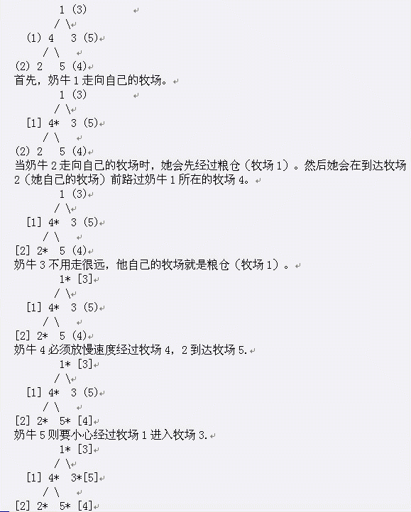

每天Farmer John的N头奶牛(1 <= N <= 100000，编号1…N)从粮仓走向他的自己的牧场。牧场构成了一棵树，粮仓在1号牧场。恰好有N-1条道路直接连接着牧场，使得牧场之间都恰好有一条路径相连。第i条路连接着A_i，B_i，(1 <= A_i <= N; 1 <= B_i <= N)。奶牛们每人有一个私人牧场P_i (1 <= P_i <= N)。粮仓的门每次只能让一只奶牛离开。耐心的奶牛们会等到他们的前面的朋友们到达了自己的私人牧场后才离开。首先奶牛1离开，前往P_1；然后是奶牛2，以此类推。当奶牛i走向牧场P_i时候，他可能会经过正在吃草的同伴旁。当路过已经有奶牛的牧场时，奶牛i会放慢自己的速度，防止打扰他的朋友。
考虑如下的牧场结构（括号内的数字代表了牧场的所有者）。
